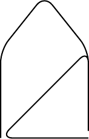

The Git TBD Timeline
Read time: 8 minutes (2164 words)
As a way to visualize the Trunk-Based Development Workflow, let’s use diagrams of the Git Timeline* to see what is happening. These diagrams were produced using the TikZ package and LaTeX.
All of my projects begin with a basic project configuration that contains the Python Sphinx documentation tool which I have used to create lecture notes ever since Sphinx hit the world in 2008. Lately, I have been using Ansible to do this basic setup step. The basic project is tagged as the 0.1.0 release and hosted on Github. Most of my projects include a public documentation website created by Sphinx and hosted on Github Pages.
Git Timelines
A Git Timeline is an *Acyclic Directed Graph. That is a fancy term for a data structure the “flows”, usuallly from left to right, along a timeline representing the development process. The timeline does not worry about actual clock time. instead, it marks important points in the development using simple symbols. Lines are drawn between these symbols. The lines represent time when some work is happening. The symbols mark the point when a new version of code isproduced and recorded in the history of the project. Git creates a record o all changes and provides a way to “go back in time” if needed as the project proceeds.
a timeline can also include “branches”, were development activities are recorded alone a new timeline parallel to the original line. These parallel timelines can continue with code changes recorded at various points. Eventually, the new timeline may reach a point where the code developed is ready to be included in the original timeline. This is accomplished by a “merge” step where the two lines combine into one. Git provided a variety of tools for removing the branch timeline, if it is not longer needed.
The “history” of a project is recorded at each symbol point along the entire timeline of a project. Each time we record changes, we include a text message designed to tell others what was done up to the point where the symbol occurs. Some projects have very strict rules for how these messages are to be formatted.
With that overview of what a timeline is, let’s look at a typical project, ans see the timeline.

The Initial Timeline